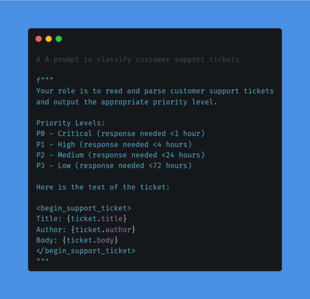

Parameterizing Prompts
Alex Comerford
alex@taoa.io
English is becoming the “AI interface”

Prompting ≃ Programming AI Models
Prompt development workflow
- Have a problem that a prompt based model can solve
- Iterate on a prompt until it solves the problem
- Use it
- Use it once and throw it out
- Use it many times by automating it
Automating prompts
To automate a prompt, you almost always want to parameterize it.
Prompt Parameterization
Let software inject data into your prompts (ex: RAG)
Example: No Parameterization

With Parameterization

Parameterization + Condition 😬

Lesson
English may be an “AI Programming Language”.
But that doesn’t mean it’s good.
Personal patterns for parameterizing prompts
- Avoid branching behavior
- Make it human readable
- Separate it into logical ’blocks’
- KISS
Bonus: Image prompting approach

Monsters
taoa.io/static/misc/slides/assets/promptedmonsters.webp
People
taoa.io/static/misc/slides/assets/promptedpeople.webp
Anime
taoa.io/static/misc/slides/assets/promptedanime.webp
I’m on the internet! 🌐
🙠Github: @cmrfrd
🦠Twitter: @thecmrfrd
📬 Email: alex@taoa.io
📑 Blog: taoa.io
taoa.io/static/slides/paramaterizing_prompts